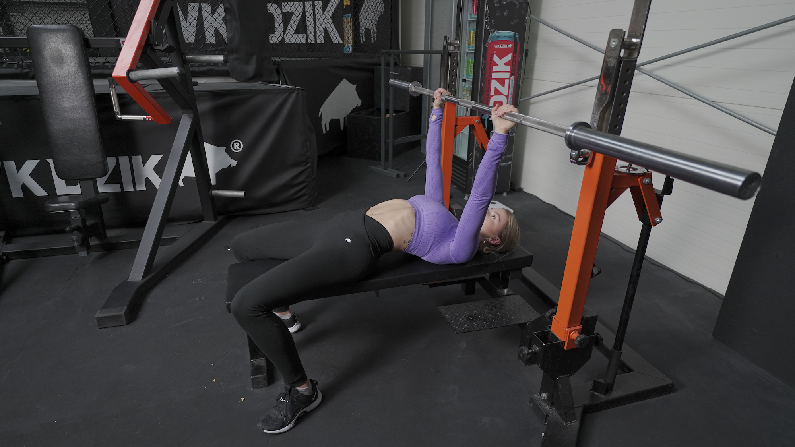
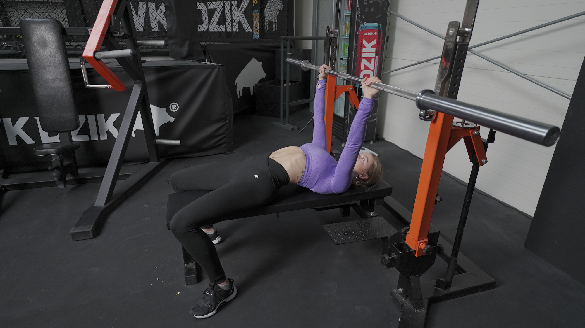

WYCISKANIE SZTANGI NA ŁAWCE POZIOMEJ
 

1. Sztangę ustaw na takiej wysokości stojakach, abyś swobodnie mogła ją ściągnąć, leżąc na ławce.
2. Połóż się na ławce poziomej.
3. Stopy ustaw szerzej niż szerokość bioder i mocno dociśnij do podłoża.
4. Wykonaj retrakcję i depresję łopatek (ściągnij je do siebie i obniż).
5. Wygnij odcinek lędźwiowy kręgosłupa w łuk, tak aby ta część pleców nie przylegała do ławeczki.
6. Napnij pośladki.
7. Złap sztangę na szerokość 1.5x szerokości Twojej obręczy barkowej i wynieś ją ze stojaków.
8.Wykonaj rotację w stawie ramiennym, tak jakbyś chciała “złamać sztangę na pół”.
9. Rozpocznij ruch opuszczania sztangi w okolice mostka, prowadząc łokcie pod kątem 45 stopni względem tułowia.
10. Dotknij sztangą okolic mostka i rozpocznij ruch wyciskania sztangi w górę i delikatnie w tył, aby znalazła się nad Twoją brodą.
W trakcie wyciskania sztangi możesz mocniej zaangażować do pracy nogi, wciskając je mocno w podłoże i “odpychając się” nimi. W rzeczywistości oczywiście nie możesz oderwać ich od podłoża, ale siła wychodząca z Twoich nóg, przypominająca odbicie, pozwoli Ci podnieść większy ciężar.